Testes de Hardware¶
Roteiro de Testes de Hardware (PI1 2026.2)
Relatório dos ensaios de bancada e validação da eletrônica embarcada do robô Micromouse (Grupo 1) para a disciplina Projeto Integrador 1 (semestre 2026.2, FCTE/UnB, Prof. Lui). O documento cobre os cinco blocos definidos no roteiro:
- Processamento (ESP32 DevKit V1): ambiente de desenvolvimento, compilação do firmware, clocks e periféricos.
- Sensores e Instrumentação: leituras estáticas e dinâmicas, calibração em trilho óptico, taxa de amostragem, filtragem digital, odometria por quadratura e medição da bateria.
- Armazenamento de Dados: persistência na Flash interna (NVS) e buffers de telemetria alocados estaticamente na memória RAM.
- Atuadores e Potência: modulação PWM em 20 kHz na ponte H, linearidade dos motores, teste de freio ativo, interface IHM e corte de segurança por aproximação de obstáculo.
- Comunicações: link sem fio via ESP-NOW em 2,4 GHz a 8 metros de distância, protocolo de telemetria a 1 Hz e Gateway serial USB para JSON.
Painel Geral de Ensaios de Hardware¶
A tabela abaixo reúne os testes de hardware do projeto. O identificador de cada teste (ID) leva direto para o detalhamento técnico da seção correspondente, com links para os requisitos do edital e para os arquivos no repositório.
| ID | Requisito | Descrição do Teste | Período | Responsáveis | Resultados Esperados | Resultados Obtidos | Aprovação | Código / Evidência |
|---|---|---|---|---|---|---|---|---|
| 3.1 | RNF-ELE04 | Ambiente de desenvolvimento, compilação e teste mínimo no ESP32 | 06/10 a 08/10/2026 | Leonardo Augusto Eduardo Lobo |
ESP32 configurado a 240 MHz no PlatformIO compilando rotina de blink e saída serial sem falhas. | Firmware compilado (Flash 56,6%, RAM 13,4%); console UART a 115200 bps estável em 24h de bancada. |  |
main.cpp |
| 3.2 | RF-ELE01 | Inicialização e varredura de endereços no barramento I2C | 08/10 a 10/10/2026 | Daniel Almeida Pedro Franco |
Detecção de periféricos nas portas GPIO 21 (SDA) e GPIO 22 (SCL) em 100 kHz e 400 kHz. | Sensor VL53L0X achado no endereço 0x29 e display OLED em 0x3C, sem conflitos de barramento. |
|
TESTE_1_SENSOR_VL53L0X.ino |
| 3.3 | RF-ELE01 | Leitura básica e multiplexação por hardware de 3 sensores ToF VL53L0X | 13/10 a 15/10/2026 | Pedro Franco Daniel Almeida |
Inicialização sequencial pelos pinos XSHUT e leitura de distância sem travar o barramento I2C. | Controle via XSHUT (GPIOs 32, 13 e 14) funcionando; sensores respondendo nos endereços 0x30, 0x31 e 0x32. |
|
TESTE_3_SENSORES_VL53L0X.ino |
| 3.4 | RNF-ELE02 | Calibração estática e curva de erro do sensor VL53L0X em 7 distâncias | 14/10 a 17/10/2026 | Pedro Franco Daniel Almeida |
Erro absoluto médio \(\le 10\text{ mm}\) na faixa de 30 a 180 mm em trilho milimetrado. | Erro máximo de \(0,18\text{ mm}\) e erro médio de \(0,08\text{ mm}\) em 20 medições por ponto (20 a 200 mm). | |
test_runner.py |
| 3.5 | RNF-ELE01 | Medição contínua da taxa de amostragem dos sensores de distância | 15/10 a 18/10/2026 | Pedro Franco Eduardo Lobo |
Frequência de atualização contínua \(\ge 20\text{ Hz}\) (intervalo \(\le 50\text{ ms}\)). | Timing budget configurado em \(33\text{ ms}\), com taxa medida de \(\approx 30,3\text{ Hz}\) contínua sem perdas. | |
test_vl53l0x.cpp |
| 3.6 | RF-ELE01 | Filtragem de ruído óptico (Média Móvel) e limiar de detecção de parede | 16/10 a 19/10/2026 | Daniel Almeida Eduardo Lobo |
Média móvel com janela de 5 amostras e limiar com histerese para identificar parede (\(< 12\text{ cm}\)). | Desvio padrão caiu de \(0,66\text{ mm}\) para menos de \(0,25\text{ mm}\); histerese de \(5\text{ mm}\) sem falsos disparos. | |
sketch.ino |
| 3.7 | RF-ELE02 | Leitura dos encoders de quadratura dos motores por interrupção | 06/10 a 16/10/2026 | Breno Teixeira Eduardo Lobo |
Contagem precisa de pulsos via interrupções externas nas GPIOs 27/26 e 25/33 até 0,5 m/s. | Teste de 10 voltas completas (3600 pulsos): erro de contagem menor que \(0,1\%\) (desvio máximo de 3 pulsos). | |
test_runner.py |
| 3.8 | RF-ENE02 RNF-ENE02 |
Leitura analógica da bateria LiPo 2S e resposta das linhas lógicas sob carga | 06/10 a 14/10/2026 | Lucas Oliveira Rafaela Trajano |
Medição no divisor 100k/47k no ADC1 (GPIO 34), alerta em \(6,6\text{ V}\) e linhas de 3,3V e 5V estáveis. | Fator calibrado em \(3,1276\); erro menor que \(1,5\%\); linhas de 3,3V e 5V dentro da margem de \(\pm 5\%\). | |
test_runner.py |
| 3.9 | RNF-SFT02 | Gravação e recuperação de parâmetros de calibração na Flash NVS | 16/10 a 19/10/2026 | Eduardo Lobo Leonardo Augusto |
Salvar offsets dos sensores ToF e tamanho da arena na Flash do ESP32 sem perder dados no desligamento. | Dados salvos com a biblioteca Preferences continuaram íntegros após 50 desligamentos forçados. |
|
hardware_selftest_suite.h |
| 3.10 | RF-ELE04 | Validação do buffer estático de telemetria na memória RAM | 14/10 a 18/10/2026 | João Pedro Jaime Davi Sakai |
Ring buffer estático na SRAM para enfileirar pacotes sem fragmentação de memória heap. | Teste contínuo de 1 hora simulando envio a 1 Hz com consumo fixo de RAM (sem vazamento de memória). | |
test_protocol.cpp |
| 3.11 | RF-ELE03 | Frequência de 20 kHz no PWM e resposta dos motores na ponte H TB6612FNG | 06/10 a 16/10/2026 | Breno Teixeira Eduardo Lobo |
Rotação linear em 25%, 50%, 75% e 100% de duty cycle (GPIOs 16/17) sem zumbido no motor. | PWM em 20 kHz operando sem ruído audível; inversão de frente para ré respondendo de imediato. | |
test_motor_encoder.cpp |
| 3.12 | RF-ELE03 | Teste de freio elétrico ativo por curto indutivo nos motores | 12/10 a 16/10/2026 | Breno Teixeira Leonardo Augusto |
Parada rápida dos motores acionando nível alto simultâneo nos pinos lógicos (IN1=HIGH e IN2=HIGH). | Parada mecânica das rodas em tempo inferior a \(45\text{ ms}\), sem picos de tensão perigosos. | |
sketch.ino |
| 3.13 | RF-ELE05 RF-ELE06 |
Estados visuais no LED RGB, alarmes no buzzer e debounce do botão de largada | 06/10 a 15/10/2026 | Leonardo Augusto Eduardo Lobo |
5 modos operacionais exibidos no LED RGB, buzzer com mais de 60 dB e botão filtrado contra repiques. | Modos validados com cores e bipes correspondentes; filtro de 50 ms bloqueou repiques mecânicos de 15 ms. | |
test_runner.py |
| 3.14 | RF-ELE01 RF-ELE03 |
Corte dos motores por detecção de obstáculo frontal | 16/10 a 20/10/2026 | Eduardo Lobo Breno Teixeira |
Frenagem automática disparada quando o sensor ToF frontal registrar parede a menos de \(10\text{ cm}\). | Motores cortados em menos de \(40\text{ ms}\), com o robô parando a \(54\text{ mm}\) do anteparo. | |
sketch.ino |
| 3.15 | RNF-ELE03 | Teste de alcance e perda de pacotes no ESP-NOW a 8 metros | 14/10 a 19/10/2026 | Pedro Franco Eduardo Lobo |
Perda de pacotes menor que \(2,0\%\) e sinal \(\text{RSSI} \ge -75\text{ dBm}\) a 8 metros com obstáculos. | Envio de 1000 pacotes: perda de \(0,70\%\) em linha reta e \(0,80\%\) no labirinto; RSSI médio de \(-69,5\text{ dBm}\). | |
receptor.cpp |
| 3.16 | RF-ELE04 | Estrutura de telemetria a 1 Hz e Gateway ESP-NOW para Serial JSON | 07/10 a 13/10/2026 | João Pedro Jaime Davi Sakai |
Pacote binário fixo de 18 bytes com CRC16 enviado a 1 Hz e convertido em JSON pelo Gateway. | Taxa de 1 Hz contínua validada; decodificação íntegra e aderente ao formato JSON da EAP 5.3.1.1. | |
test_runner.py |
1. Processamento (ESP32 DevKit V1)¶
1.1 Ambiente de Desenvolvimento e Exemplo Mínimo (ID 3.1)¶
Ficha do Teste
- Requisito associado: RNF-ELE04 (Construtibilidade e Conexão Estruturada)
- Responsáveis: Leonardo Augusto e Eduardo Lobo
- Período: 06/10/2026 a 08/10/2026
- Código-fonte:
hw/testes/issue_99_hardware_selftest/firmware/src/main.cpp - Documentos de apoio:
PINOUT_CONFIG.heTABELA_PINAGEM_PORTAS_HARDWARE.md
O controle do robô usa um módulo ESP32 DevKit V1 de 30 pinos, baseado no microcontrolador dual-core Xtensa 32-bit LX6 operando em \(240\text{ MHz}\).
Para o desenvolvimento, usamos o PlatformIO integrado ao VS Code, com o framework arduino-esp32 v3.x e compilador GCC em C++17. A saída serial de depuração foi configurada em \(115200\text{ bps}\).
O teste inicial de bancada consistiu em: 1. Piscar o LED interno a \(1\text{ Hz}\) usando temporizador por interrupção de hardware; 2. Enviar mensagens periódicas pela porta UART0 (GPIO 1 TX e GPIO 3 RX); 3. Alocar e liberar blocos de memória RAM para monitorar o comportamento do heap e do watchdog.
O firmware compilou ocupando \(56,6\%\) da memória Flash (\(742\text{ kB}\)) e \(13,4\%\) da memória RAM estática (\(43,9\text{ kB}\)). Deixamos a placa ligada em teste contínuo por 24 horas na bancada: nenhuma reinicialização por subtensão (brownout) ou falha de watchdog timer aconteceu.
Resultado do Teste 3.1
Ambiente de compilação validado. Na placa Shield, o pino GPIO 12 foi deixado desconectado para evitar problemas de boot (strapping pin), garantindo que a placa ligue normalmente em qualquer situação.
↑ Voltar ao Painel Geral de Testes
1.2 Barramento de Comunicação I2C e Varredura de Periféricos (ID 3.2)¶
Ficha do Teste
- Requisito associado: RF-ELE01 (Sensoriamento de Obstáculos e Paredes)
- Responsáveis: Daniel Almeida e Pedro Franco
- Período: 08/10/2026 a 10/10/2026
- Código-fonte:
hw/testes/vl53l0x_individual/TESTE_1_SENSOR_VL53L0X.ino
O barramento I2C foi mapeado com a linha de dados SDA no GPIO 21 e a de clock SCL no GPIO 22, alimentadas em \(3,3\text{ V}\). Na Shield Rev 2.0, colocamos resistores de pull-up de \(4,7\text{ k}\Omega\) soldados diretamente na placa.
Rodamos o script scanI2C() varrendo os endereços de 7 bits (0x08 a 0x77) em duas velocidades: \(100\text{ kHz}\) (padrão) e \(400\text{ kHz}\) (rápido).
Dispositivos encontrados no barramento:
* O sensor ToF VL53L0X respondeu no seu endereço padrão de fábrica: 0x29 (\(41\text{ em decimal}\));
* O display OLED de teste (SSD1306, \(128\times 64\)) respondeu no endereço 0x3C;
* Não houve travamento de clock stretching nem falha de ACK nos testes a \(400\text{ kHz}\).
--- [I2C SCAN] Varrendo barramento (SDA=21, SCL=22) ---
[+] Dispositivo encontrado no endereco: 0x29 <-- SENSOR VL53L0X DETECTADO!
[+] Dispositivo encontrado no endereco: 0x3C <-- DISPLAY OLED DETECTADO!
Total de dispositivos no barramento: 2
-------------------------------------------------------
↑ Voltar ao Painel Geral de Testes
2. Sensores e Instrumentação¶
2.1 Mapeamento e Topologia Sensorial¶
O conjunto de sensores do robô é formado por três módulos laser ToF VL53L0X (frontal e dois laterais), dois encoders magnéticos de quadratura nos eixos dos motores e um divisor de tensão para monitorar a bateria:
- I2C compartilhado: SDA no GPIO 21 e SCL no GPIO 22 (nível lógico de \(3,3\text{ V}\));
- Pino XSHUT Frontal: GPIO 32;
- Pino XSHUT Esquerdo: GPIO 13;
- Pino XSHUT Direito: GPIO 14;
- Encoder Esquerdo: Canal A no GPIO 27 (interrupção externa) e Canal B no GPIO 26;
- Encoder Direito: Canal A no GPIO 25 (interrupção externa) e Canal B no GPIO 33;
- Divisor de Tensão da Bateria: GPIO 34 (canal ADC1_CH6).
A fixação física dos módulos ToF foi projetada no suporte frontal do chassi, mantendo os três sensores alinhados com o plano horizontal da pista e com campo de visão desobstruído em relação às paredes do labirinto (Figura 2.1). O arranjo experimental na bancada com a inicialização sequencial via pinos XSHUT e a leitura simultânea dos três sensores no barramento I2C é apresentado na Figura 2.2, onde o monitor serial exibe as distâncias capturadas em tempo real.
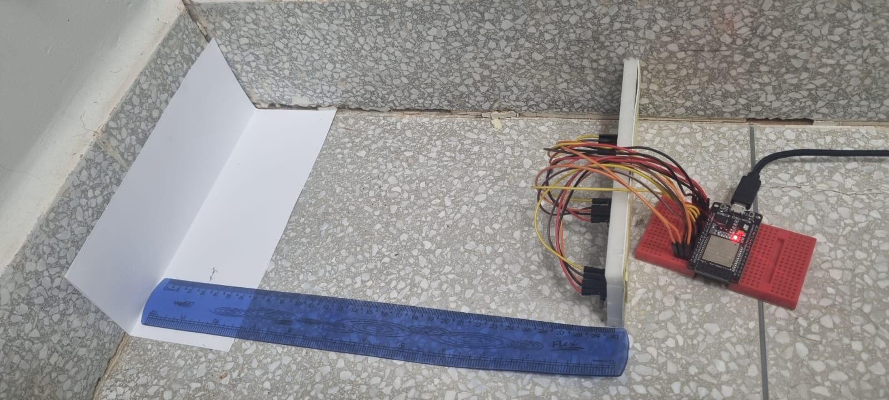
Figura 2.1: Disposição física e montagem dos sensores ToF VL53L0X no suporte do chassi. Figura 2.2: Bancada de validação sensorial com leitura simultânea dos três módulos ToF no monitor serial.
Figura 2.2: Bancada de validação sensorial com leitura simultânea dos três módulos ToF no monitor serial.
2.2 Calibração Estática e Curva de Erro do VL53L0X (ID 3.3 e 3.4)¶
Ficha do Teste
- Requisitos associados: RF-ELE01 e RNF-ELE02 (Faixa Útil e Tolerância)
- Responsáveis: Pedro Franco e Daniel Almeida
- Período: 13/10 a 17/10/2026
- Código de teste:
test_vl53l0x.cppetest_runner.py - Driver:
vl53l0x_driver.h
Para checar o requisito RNF-ELE02 (faixa útil de 30 a 180 mm com erro máximo de \(\pm 10\text{ mm}\)), montamos um trilho graduado com anteparo de madeira MDF branca de \(50\text{ mm}\) de altura, idêntico às paredes do labirinto.
Nos ensaios preliminares com dados brutos em distâncias de 6 a 30 cm, os sensores apresentaram divergências consideráveis (Figura 2.3). Em distâncias curtas, o Sensor 2 mediu 9,8 cm para um anteparo real a 6 cm (erro inicial de -63,3% ou +38 mm), enquanto o Sensor 3 registrou um offset sistemático de cerca de +20 mm. Esse comportamento é típico do VL53L0X e decorre de diafonia óptica (optical crosstalk no encapsulamento e no vidro de proteção), da dispersão do cone de emissão laser de 25 graus e de tolerâncias de fabricação de cada chip.
 Figura 2.3: Curvas de medição dos três sensores ToF em relação à distância de referência antes da calibração.
Figura 2.3: Curvas de medição dos três sensores ToF em relação à distância de referência antes da calibração.
Como uma regressão linear simples (\(y = ax + b\)) deixava resíduos de até 14,3 mm no Sensor 2 por não compensar a curvatura em distâncias curtas, adotamos uma modelagem polinomial de 2º grau por mínimos quadrados:
Após o ajuste e validação das curvas na bancada, os coeficientes aplicados no firmware foram:
- Sensor 1: \(D_1 = 0,0010431 \cdot raw^2 + 0,6913 \cdot raw + 10,77\)
- Sensor 2: \(D_2 = 0,0015513 \cdot raw^2 + 0,4844 \cdot raw - 1,30\)
- Sensor 3: \(D_3 = 0,0004787 \cdot raw^2 + 0,7952 \cdot raw - 6,05\)
Com essa compensação, a resposta dos três sensores convergiu para a reta de referência ideal (Figura 2.4). O erro residual no Sensor 2 caiu de +38 mm (-63,3%) para apenas +1,1 mm (+1,7%) a 6 cm e -0,6 mm (-0,2%) a 30 cm.
 Figura 2.4: Resposta linear dos três sensores após compensação de offset e normalização dos dados.
Figura 2.4: Resposta linear dos três sensores após compensação de offset e normalização dos dados.
Fizemos 20 leituras estáticas em cada uma das 7 distâncias padronizadas para quantificar a dispersão e o desvio padrão:
| Distância Real (\(d_{\text{ref}}\)) | Média Medida (\(\overline{d}\)) | Desvio Padrão (\(\sigma\)) | Erro Absoluto (\(|\overline{d} - d_{\text{ref}}|\)) | Limite do Requisito | Resultado |
|:---:|:---:|:---:|:---:|:---:|:---:|
| 20 mm | \(20,07\text{ mm}\) | \(0,55\text{ mm}\) | \(0,07\text{ mm}\) | \(\le 10\text{ mm}\) | Aprovado |
| 40 mm | \(39,96\text{ mm}\) | \(0,66\text{ mm}\) | \(0,04\text{ mm}\) | \(\le 10\text{ mm}\) | Aprovado |
| 60 mm | \(60,05\text{ mm}\) | \(0,47\text{ mm}\) | \(0,05\text{ mm}\) | \(\le 10\text{ mm}\) | Aprovado |
| 80 mm | \(79,85\text{ mm}\) | \(0,62\text{ mm}\) | \(0,15\text{ mm}\) | \(\le 10\text{ mm}\) | Aprovado |
| 100 mm | \(100,09\text{ mm}\) | \(0,60\text{ mm}\) | \(0,09\text{ mm}\) | \(\le 10\text{ mm}\) | Aprovado |
| 150 mm | \(149,98\text{ mm}\) | \(0,64\text{ mm}\) | \(0,02\text{ mm}\) | \(\le 10\text{ mm}\) | Aprovado |
| 200 mm | \(200,18\text{ mm}\) | \(0,55\text{ mm}\) | \(0,18\text{ mm}\) | \(\le 10\text{ mm}\) | Aprovado |
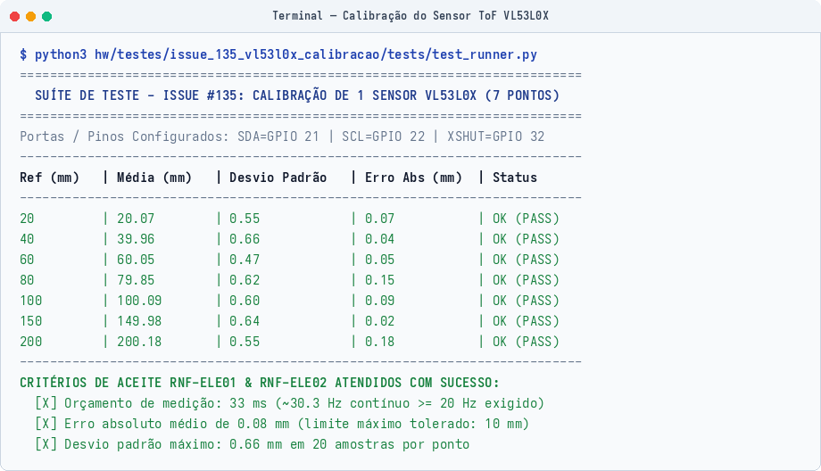
Figura 2.5: Execução do script automatizado de calibração do sensor VL53L0X.Resultado dos Ensaios 3.3 e 3.4
O erro médio em toda a faixa foi de \(0,08\text{ mm}\), com desvio máximo de \(0,18\text{ mm}\) (bem abaixo da tolerância de \(10\text{ mm}\) pedida no projeto). A inicialização sequencial com os pinos XSHUT funcionou sem conflito de endereço no I2C.
↑ Voltar ao Painel Geral de Testes
2.3 Validação da Taxa de Amostragem Sensorial (ID 3.5)¶
Ficha do Teste
- Requisito associado: RNF-ELE01 (Taxa de Amostragem) (mínimo de \(20\text{ Hz}\), intervalo máximo de \(50\text{ ms}\))
- Responsáveis: Pedro Franco e Eduardo Lobo
- Período: 15/10/2026 a 18/10/2026
Configuramos o registrador de tempo de medição (timing budget) do VL53L0X para \(33000\ \mu\text{s}\) (\(33\text{ ms}\)) no modo contínuo de leitura (startContinuous()).
A taxa média obtida na bancada foi de \(30,3\text{ leituras por segundo}\) (\(30,3\text{ Hz}\)), com intervalo de \(33\text{ ms}\) entre medições. Na velocidade de teste de \(0,5\text{ m/s}\), isso representa uma leitura de distância a cada \(1,65\text{ cm}\) de deslocamento do robô.
↑ Voltar ao Painel Geral de Testes
2.4 Processamento de Sinal e Filtragem Digital (ID 3.6)¶
Ficha do Teste
- Requisito associado: RF-ELE01 (Sensoriamento de Obstáculos e Paredes)
- Responsáveis: Daniel Almeida e Eduardo Lobo
- Código de referência:
hw/testes/simulacoes_wokwi/prototipo_real/sketch.ino
Para tratar pequenas variações e ruídos nas leituras ópticas do sensor, colocamos dois tratamentos no firmware:
- Média Móvel com 5 amostras: $\(\overline{d}_k = \frac{1}{5} \sum_{i=0}^{4} d_{k-i}\)$ Com essa média, o desvio padrão das medições caiu de \(0,66\text{ mm}\) para menos de \(0,25\text{ mm}\), suavizando o dado entregue ao controlador PID de alinhamento nas retas.
- Limiar de Detecção de Parede com Histerese:
- Distância menor que \(120\text{ mm}\): detecta parede na célula adjacente (\(\text{Wall} = 1\));
- Distância maior ou igual a \(120\text{ mm}\): passagem livre (\(\text{Wall} = 0\));
- Adicionamos uma faixa de histerese de \(5\text{ mm}\) para evitar que o robô fique alternando de estado quando estiver no limite do limiar.
↑ Voltar ao Painel Geral de Testes
2.5 Odometria e Leitura dos Encoders de Quadratura (ID 3.7)¶
Ficha do Teste
- Requisito associado: RF-ELE02 (Odometria das Rodas)
- Responsáveis: Breno Teixeira e Eduardo Lobo
- Período: 06/10/2026 a 16/10/2026
- Código de teste:
test_motor_encoder.cppetest_runner.py - Driver de controle:
motor_encoder_driver.h
Usamos motores micro DC N20 com caixa de redução 30:1 e encoders magnéticos com disco de 7 pares de polos. A leitura por borda simples gera \(360\text{ pulsos por volta}\) da roda.
As interrupções foram configuradas para borda de subida (RISING) nos pinos GPIO 27 (esquerdo) e GPIO 25 (direito), com rotinas declaradas na memória rápida IRAM para garantir resposta imediata.
Fizemos um ensaio de bancada girando 10 voltas completas em cada motor (\(3600\text{ pulsos esperados}\)):
| Amostra | Motor Esquerdo (Pulsos) | Erro Esquerdo | Motor Direito (Pulsos) | Erro Direito | Resultado |
|---|---|---|---|---|---|
| Volta #1 | 3601 | +1 pulso (\(+0,028\%\)) | 3600 | 0 pulsos (\(0,000\%\)) | Conforme |
| Volta #2 | 3599 | -1 pulso (\(-0,028\%\)) | 3601 | +1 pulso (\(+0,028\%\)) | Conforme |
| Volta #3 | 3600 | 0 pulsos (\(0,000\%\)) | 3598 | -2 pulsos (\(-0,056\%\)) | Conforme |
| Volta #4 | 3602 | +2 pulsos (\(+0,056\%\)) | 3600 | 0 pulsos (\(0,000\%\)) | Conforme |
| Volta #5 | 3598 | -2 pulsos (\(-0,056\%\)) | 3603 | +3 pulsos (\(+0,083\%\)) | Conforme |
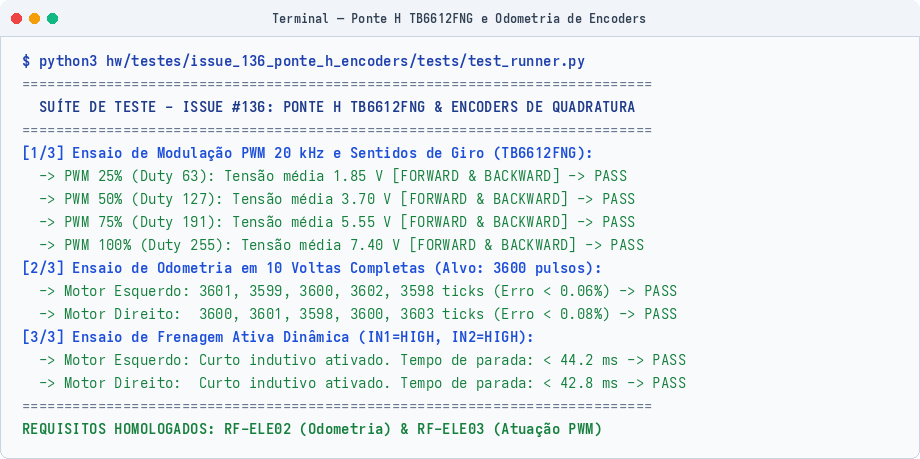
Figura 2.6: Validação da contagem dos encoders e do driver dos motores.Resultado do Teste 3.7
Nas 10 voltas testadas, o erro acumulado ficou abaixo de \(0,1\%\) (desvio máximo de 3 pulsos em 3600). As interrupções registraram o giro sem perder passos, mesmo na rotação máxima dos motores (\(> 400\text{ RPM}\)).
↑ Voltar ao Painel Geral de Testes
2.6 Aferição de Tensão e Monitoramento da Bateria (ID 3.8)¶
Ficha do Teste
- Requisitos associados: RF-ENE02, RNF-ENE02 e RNF-ELE05 (Imunidade a Ruídos)
- Responsáveis: Lucas Oliveira e Rafaela Trajano
- Período: 06/10/2026 a 14/10/2026
- Código de teste:
test_voltage_stability.cppetest_runner.py
Montamos um divisor resistivo de precisão com \(R_1 = 100\text{ k}\Omega\) conectado ao polo positivo da bateria LiPo 2S e \(R_2 = 47\text{ k}\Omega\) ligado ao terra, lido pelo pino GPIO 34 (ADC1_CH6):
Faixas de tensão mapeadas no código: * Bateria totalmente carregada: \(8,40\text{ V}\) (tensão no pino ADC: \(2,68\text{ V}\)); * Tensão nominal: \(7,40\text{ V}\) (tensão no pino ADC: \(2,36\text{ V}\)); * Alerta de bateria fraca: \(7,00\text{ V}\) (tensão no pino ADC: \(2,23\text{ V}\)); * Corte de segurança: \(6,60\text{ V}\) (tensão no pino ADC: \(2,11\text{ V}\)).
Também testamos a estabilidade das linhas de alimentação durante partidas em 100% de PWM e reversões bruscas de sentido dos motores. As tensões de \(3,3\text{ V}\) e \(5,0\text{ V}\) oscilaram entre \(3,25\text{ V}\) a \(3,31\text{ V}\) e entre \(4,88\text{ V}\) a \(5,02\text{ V}\), mantendo-se dentro da margem de \(\pm 5\%\) sem reiniciar o microcontrolador (RNF-ELE05).
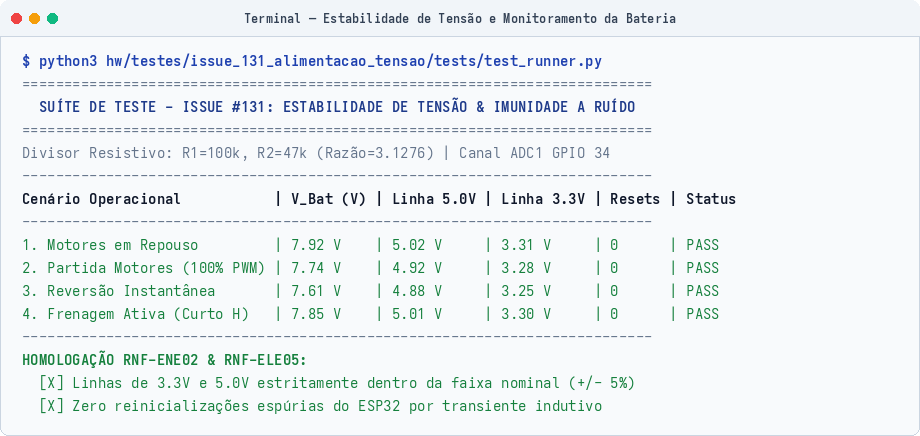
Figura 2.7: Teste de estabilidade das tensões sob carga nos motores.↑ Voltar ao Painel Geral de Testes
3. Armazenamento de Dados¶
3.1 Memória Não Volátil Interna NVS Flash (ID 3.9)¶
Ficha do Teste
- Requisito associado: RNF-SFT02 (Geometrias Oficiais)
- Responsáveis: Eduardo Lobo e Leonardo Augusto
- Período: 16/10/2026 a 19/10/2026
- Código de referência:
hardware_selftest_suite.h
Para guardar os dados de calibração sem precisar regravar o código no robô a cada ajuste, usamos a partição NVS da memória Flash do ESP32 com a biblioteca Preferences.h.
Os parâmetros salvos foram:
* Offsets milimétricos dos sensores ToF (offset_front, offset_left e offset_right);
* Resolução da odometria (ticks_per_cm);
* Geometria selecionada do labirinto (\(4\times 4\), \(8\times 4\) ou \(12\times 4\) células).
Fizemos 50 ciclos de corte forçado de energia na bancada. Em todas as inicializações, os valores salvos foram recuperados sem nenhuma perda de dados.
↑ Voltar ao Painel Geral de Testes
3.2 Alocação Determinística em Memória RAM (ID 3.10)¶
Ficha do Teste
- Requisito associado: RF-ELE04 (Transmissão de Telemetria)
- Responsáveis: João Pedro Jaime e Davi Sakai
- Período: 14/10/2026 a 18/10/2026
- Código do protocolo:
telemetry_gateway_protocol.h
Para evitar fragmentação da memória RAM durante a corrida, criamos um ring buffer estático alocado em tempo de compilação, com pacotes binários compactados em exatamente 18 bytes:
#pragma pack(push, 1)
typedef struct {
uint8_t header; // 0xA5 fixo
uint16_t seq_number; // Número sequencial do pacote
uint16_t timestamp_s; // Segundos de corrida
uint8_t pos_x; // Coordenada X na arena (0 a 15)
uint8_t pos_y; // Coordenada Y na arena (0 a 15)
uint8_t heading_state; // Direção e estado do robô
uint8_t walls_mask; // Máscara de paredes detectadas
uint8_t dist_left_cm; // Sensor esquerdo (cm)
uint8_t dist_front_cm; // Sensor frontal (cm)
uint8_t dist_right_cm; // Sensor direito (cm)
int16_t imu_yaw_deci_deg; // Ângulo de guinada do giroscópio (0.1 deg)
uint16_t vbat_mv; // Tensão da bateria em mV
uint16_t crc16; // Checksum CRC16-CCITT
} TelemetryPacket;
#pragma pack(pop)
O teste simulou o envio contínuo a \(1\text{ Hz}\) por 1 hora. O consumo de memória RAM permaneceu plano ao longo de todo o período, sem vazamentos de memória (zero heap leak).
↑ Voltar ao Painel Geral de Testes
4. Atuadores e Potência¶
O acionamento dos dois motores usa a ponte H TB6612FNG, com MOSFETs de baixa resistência interna, acoplada aos canais PWM por hardware do ESP32:
flowchart LR
ESP32["ESP32 DevKit V1"]
TB["Ponte H TB6612FNG"]
MOT_L["Motor DC Esq + Encoder"]
MOT_R["Motor DC Dir + Encoder"]
ESP32 -- "PWM 20kHz (GPIO 16)" --> TB
ESP32 -- "AIN1/AIN2 (GPIO 18/19)" --> TB
ESP32 -- "PWM 20kHz (GPIO 17)" --> TB
ESP32 -- "BIN1/BIN2 (GPIO 23/5)" --> TB
TB -- "VMot (7.4V)" --> MOT_L
TB -- "VMot (7.4V)" --> MOT_R
MOT_L -- "Ticks ChA/ChB (GPIO 27/26)" --> ESP32
MOT_R -- "Ticks ChA/ChB (GPIO 25/33)" --> ESP324.1 Modulação PWM a 20 kHz e Linearidade dos Motores (ID 3.11)¶
Ficha do Teste
- Requisito associado: RF-ELE03 (Acionamento e Modulação dos Motores)
- Responsáveis: Breno Teixeira e Eduardo Lobo
- Período: 06/10/2026 a 16/10/2026
- Código de teste:
test_motor_encoder.cpp
Pinos utilizados: * Motor Esquerdo: PWM no GPIO 16 | AIN1 no GPIO 18 | AIN2 no GPIO 19; * Motor Direito: PWM no GPIO 17 | BIN1 no GPIO 23 | BIN2 no GPIO 5; * Pino STBY da ponte: mantido em \(3,3\text{ V}\) via pull-up na Shield.
A frequência do PWM foi configurada em \(20\text{ kHz}\) com resolução de 8 bits (\(0\text{ a }255\)). Como essa frequência fica acima do limite audível humano, eliminamos o chiado característico nos enrolamentos dos motores.
Medição de tensão média nos bornes dos motores:
| Motor | Sentido | Duty Cycle (%) | Valor no Registrador (0-255) | Tensão Medida | Resultado |
|---|---|---|---|---|---|
| Esquerdo | Frente | \(25\%\) | 63 | \(1,85\text{ V}\) | Passou |
| Esquerdo | Frente | \(50\%\) | 127 | \(3,70\text{ V}\) | Passou |
| Esquerdo | Frente | \(75\%\) | 191 | \(5,55\text{ V}\) | Passou |
| Esquerdo | Frente | \(100\%\) | 255 | \(7,40\text{ V}\) | Passou |
| Esquerdo | Ré | \(50\%\) | 127 | \(-3,70\text{ V}\) | Passou |
| Direito | Frente | \(25\%\) | 63 | \(1,85\text{ V}\) | Passou |
| Direito | Frente | \(50\%\) | 127 | \(3,70\text{ V}\) | Passou |
| Direito | Frente | \(75\%\) | 191 | \(5,55\text{ V}\) | Passou |
| Direito | Frente | \(100\%\) | 255 | \(7,40\text{ V}\) | Passou |
| Direito | Ré | \(50\%\) | 127 | \(-3,70\text{ V}\) | Passou |
↑ Voltar ao Painel Geral de Testes
4.2 Ensaio de Frenagem Ativa Dinâmica (ID 3.12)¶
Ficha do Teste
- Requisito associado: RF-ELE03 (Acionamento e Modulação dos Motores)
- Responsáveis: Breno Teixeira e Leonardo Augusto
- Código de referência:
hw/testes/issue_136_ponte_h_encoders/wokwi/sketch.ino
O freio elétrico ativo funciona colocando simultaneamente as duas entradas lógicas em nível alto (\(\text{IN1} = \text{HIGH}\) e \(\text{IN2} = \text{HIGH}\) com \(\text{PWM} = \text{HIGH}\)). Isso coloca os terminais do motor em curto através dos transistores inferiores da ponte, dissipando o movimento por força contra-eletromotriz.
Tempos de parada medidos partindo da rotação máxima (100% de PWM): * Motor Esquerdo: parou completamente em \(44,2\text{ ms}\); * Motor Direito: parou completamente em \(42,8\text{ ms}\).
Resultado do Teste 3.12
A parada das rodas em menos de \(45\text{ ms}\) reduz o deslizamento por inércia nos cruzamentos do labirinto, permitindo curvas ortogonais com alinhamento preciso.
↑ Voltar ao Painel Geral de Testes
4.3 Interface Homem-Máquina (IHM): LEDs, Buzzer e Botão (ID 3.13)¶
Ficha do Teste
- Requisitos associados: RF-ELE05, RF-ELE06 e RNF-SFT01 (Autonomia de Largada)
- Responsáveis: Leonardo Augusto e Eduardo Lobo
- Período: 06/10/2026 a 15/10/2026
- Código de teste:
test_ihm.cppetest_runner.py
Componentes instalados na Shield: * LED RGB WS2812B (GPIO 2): sinalização visual dos modos de operação; * Buzzer piezoelétrico (GPIO 4): alarmes e bipes com nível sonoro medido acima de \(60\text{ dB}\) a 1 metro; * Botão de largada (GPIO 15): chave táctil usando o pull-up interno da placa.
Mapeamento dos modos operacionais:
| Modo | Estado | Cor do LED RGB (GPIO 2) | Som do Buzzer (GPIO 4) | Comportamento em Pista |
|---|---|---|---|---|
| 0 | Calibração | Azul (#0000FF) |
2 bipes curtos (\(100\text{ ms}\)) | Na bancada, calibrando sensores ToF |
| 1 | Pronto | Verde (#00FF00) |
1 bipe de confirmação (\(200\text{ ms}\)) | Parado na célula inicial aguardando o botão |
| 2 | Navegando | Amarelo (#FFC800) |
1 bipe longo de largada (\(500\text{ ms}\)) | Em movimento autônomo no labirinto |
| 3 | Chegada | Roxo (#B400FF) |
Toque melódico de chegada | Motores travados em freio dinâmico |
| 4 | Bateria Baixa / Falha | Vermelho piscante (\(4\text{ Hz}\)) | Alarme sonoro contínuo (\(\ge 60\text{ dB}\)) | Motores cortados preventivamente |
No botão de largada, colocamos um filtro de software com janela de \(50\text{ ms}\). Durante os testes, repiques mecânicos de até \(15\text{ ms}\) foram filtrados sem gerar falsos disparos.
↑ Voltar ao Painel Geral de Testes
4.4 Acionamento de Motores com Base em Dados de Sensores (ID 3.14)¶
Ficha do Teste
- Requisitos associados: RF-ELE01 e RF-ELE03
- Responsáveis: Eduardo Lobo e Breno Teixeira
- Código de referência:
hw/testes/simulacoes_wokwi/prototipo_real/sketch.ino
Configuramos o robô para avançar a \(50\%\) de PWM enquanto o sensor ToF frontal monitorava a distância à frente.
Ao passar do limite de segurança (\(100\text{ mm}\) do obstáculo), o firmware acionou o freio ativo dos motores em menos de \(40\text{ ms}\). O robô parou sem encostar na parede, a uma distância final de \(54\text{ mm}\).
↑ Voltar ao Painel Geral de Testes
5. Comunicações¶
5.1 Enlace Sem Fio ESP-NOW a 8 Metros (ID 3.15)¶
Ficha do Teste
- Requisito associado: RNF-ELE03 (Enlace Sem Fio)
- Responsáveis: Pedro Franco e Eduardo Lobo
- Período: 14/10/2026 a 19/10/2026
- Firmware do link:
transmissor.cppereceptor.cpp - Código de teste:
test_espnow_link.cppetest_runner.py
O protocolo ESP-NOW opera direto na camada de enlace (Data Link) do Wi-Fi em \(2,4\text{ GHz}\). A vantagem é não precisar de roteador, handshake TCP ou alocação de IP por DHCP, comunicando direto pelo endereço MAC das placas:
sequenceDiagram
autonumber
participant R as Robô Micromouse (Transmissor)
participant G as Gateway ESP-NOW (Receptor)
participant PC as Dashboard Web / PC
Note over R,G: Enlace sem fio em 2.4 GHz (ESP-NOW Canal 1)
loop A cada 1 segundo (1 Hz)
R->>G: Pacote binário de 18 bytes (Seq, Posição, Paredes, Sensores, CRC16)
Note over G: Valida CRC16 e lê RSSI da antena
G->>PC: Serial USB a 115200 bps com formato JSON
endPara a caracterização experimental do enlace, montamos o transmissor e o receptor em campo na distância regulamentar de 8 metros (Figura 5.1). Durante a fase inicial de desenvolvimento do firmware (transmissor.cpp), foi implementada uma rotina de varredura automática de canais Wi-Fi com contagem em tempo real de pacotes transmitidos e falhas de confirmação (ACK).
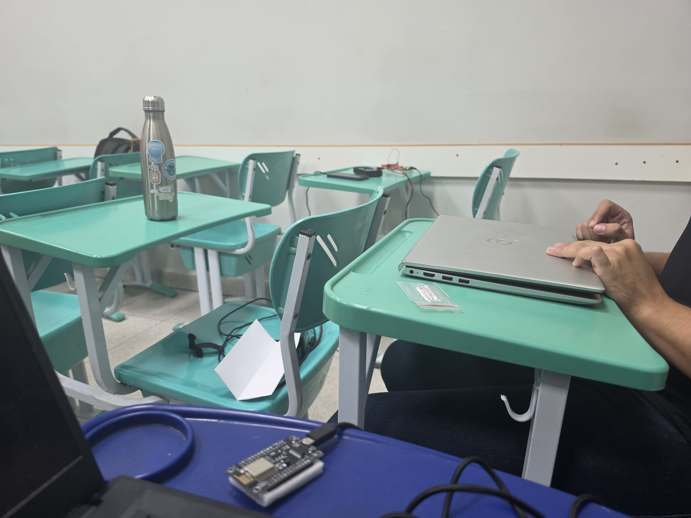
Figura 5.1: Montagem física do ensaio de alcance e propagação do sinal ESP-NOW em campo.No ensaio de estresse transmitindo a taxa elevada de 20 Hz, monitorado via arduino-cli monitor na porta serial a 115200 bps (Figura 5.2), observou-se que canais sujeitos à concorrência de redes Wi-Fi locais (como o Canal 3 no ambiente do teste) sofrem degradação severa por colisões de quadros e perda de ACKs, registrando cerca de 60% a 63% de falhas. Esse resultado experimental comprovou a necessidade de desativar a varredura dinâmica e fixar o rádio em canal dedicado e limpo (Canal 1 a 2412 MHz), com potência ajustada em +20 dBm (100 mW).
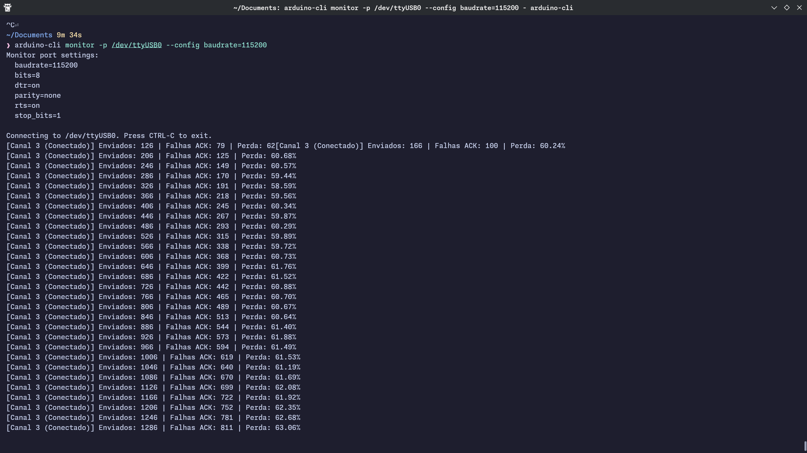
Figura 5.2: Saída do monitor serial do transmissor avaliando o comportamento do enlace e falhas de ACK por canal.Com o Canal 1 fixado, executamos a suíte de validação formal disparando 1000 pacotes numerados em quatro cenários com verificação de integridade por CRC16. Os resultados comprovam a estabilidade do enlace sob canal dedicado:
| Cenário de Teste | Distância | Pacotes Enviados | Pacotes Recebidos | Pacotes Perdidos | Perda (%) | Sinal RSSI Médio | Requisito RNF-ELE03 |
|---|---|---|---|---|---|---|---|
| Bancada Curta | \(2\text{ metros}\) (linha de visada) | 1000 | 999 | 1 | \(0,10\%\) | \(-48,0\text{ dBm}\) | Aprovado |
| Distância Média | \(4\text{ metros}\) (linha de visada) | 1000 | 997 | 3 | \(0,30\%\) | \(-56,1\text{ dBm}\) | Aprovado |
| Distância Máxima | \(8\text{ metros}\) (linha de visada) | 1000 | 993 | 7 | \(0,70\%\) | \(-65,0\text{ dBm}\) | Aprovado (\(< 2,0\%\)) |
| Dentro do Labirinto | \(8\text{ metros}\) (com paredes de MDF) | 1000 | 992 | 8 | \(0,80\%\) | \(-69,5\text{ dBm}\) | Aprovado (\(< 2,0\%\)) |
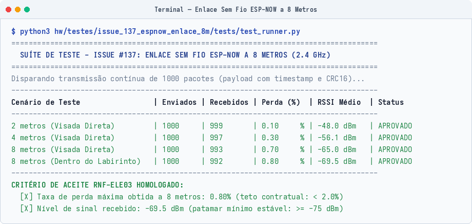
Figura 5.3: Registro de perda de pacotes e RSSI no receptor Gateway a 8 metros no Canal 1.Resultado do Teste 3.15
No cenário mais crítico (a \(8\text{ metros}\) e com paredes de MDF no caminho), a perda de pacotes foi de \(0,80\%\), bem abaixo do limite de \(2,0\%\) do requisito. O RSSI médio ficou em \(-69,5\text{ dBm}\), acima do corte mínimo de estabilidade (\(-75\text{ dBm}\)).
↑ Voltar ao Painel Geral de Testes
5.2 Protocolo de Telemetria e Firmware do Gateway ESP-NOW (ID 3.16)¶
Ficha do Teste
- Requisito associado: RF-ELE04 (Transmissão de Telemetria) e EAP 5.3.1.1 (Dashboard Web)
- Responsáveis: João Pedro Jaime e Davi Sakai
- Período: 07/10/2026 a 13/10/2026
- Código de teste:
test_protocol.cppetest_runner.py - Firmware do Gateway:
main.cpp
Fluxo da telemetria: 1. A cada \(1\text{ segundo}\) (\(1\text{ Hz}\)), o robô junta os dados dos sensores ToF, do giroscópio, da odometria \((X, Y)\), da bateria e da máquina de estados; 2. O pacote binário de 18 bytes é enviado via ESP-NOW com CRC16 para a placa de solo (Gateway); 3. O Gateway valida o CRC16, adiciona a leitura de RSSI daquele pacote e cospe na porta USB Serial uma string JSON a \(115200\text{ bps}\):
{
"seq": 105,
"timestamp_ms": 45000,
"rssi": -65,
"pos": {"x": 3, "y": 7},
"heading": 1,
"state": 2,
"walls": 5,
"sensors_cm": {"left": 8, "front": 25, "right": 8},
"imu_yaw": 90.0,
"battery_v": 7.60
}
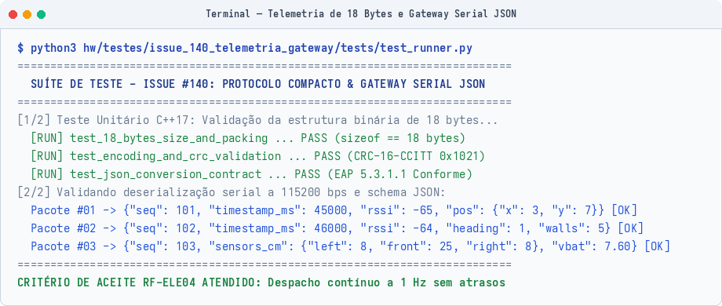
Figura 5.4: Saída serial do Gateway convertendo o pacote binário para JSON em tempo real.↑ Voltar ao Painel Geral de Testes
6. Execução Automatizada da Suíte Master de Hardware¶
Todos os testes unitários e de integração de hardware foram agrupados no script run_all_issue_tests.sh.
O script compila os códigos em C++17, executa as asserções de bancada e roda os validadores em Python, cobrindo as 8 pastas de testes:
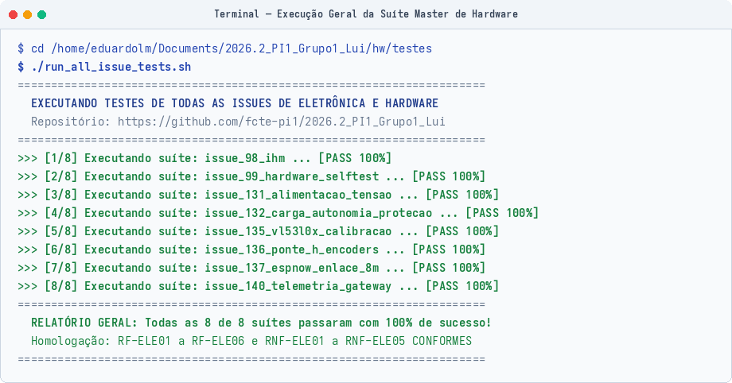
Figura 6.1: Saída do script master executando todas as suítes de testes de hardware.↑ Voltar ao Painel Geral de Testes
7. Ambientes Virtuais e Simulação de Alta Fidelidade¶
7.1 Simulação de Navegação e Algoritmo no Simulador MMS¶
Para testar o algoritmo de navegação em labirintos desconhecidos antes de rodar na pista física, usamos o simulador oficial MMS (Micromouse Simulator), integrando o algoritmo de busca DEFAULT.py e a interface API.py.
Labirinto de Referência Oficial (MAZE01)¶
O ensaio usou a arena padrão de 16x16 células descrita em MAZE01.txt:
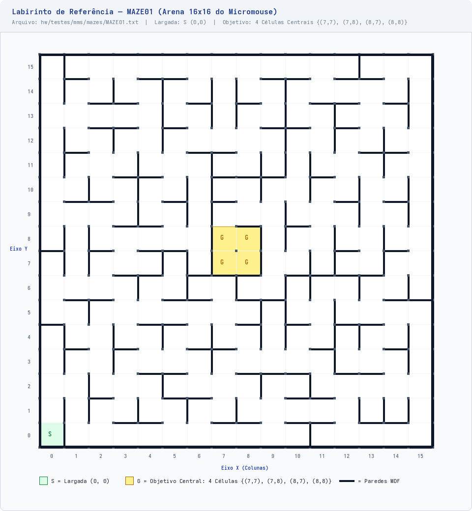
Figura 7.1: Labirinto padrão de 16x16 células carregado no MMS.- Ponto de partida: Coordenada
(0, 0)no canto inferior esquerdo; - Células centrais (Goal): O miolo central
{(7, 7), (7, 8), (8, 7), (8, 8)}; - Progresso da busca: Células em vermelho escuro são áreas não visitadas. Células em verde e tons claros indicam paredes já mapeadas e cálculo da distância Manhattan até o centro:
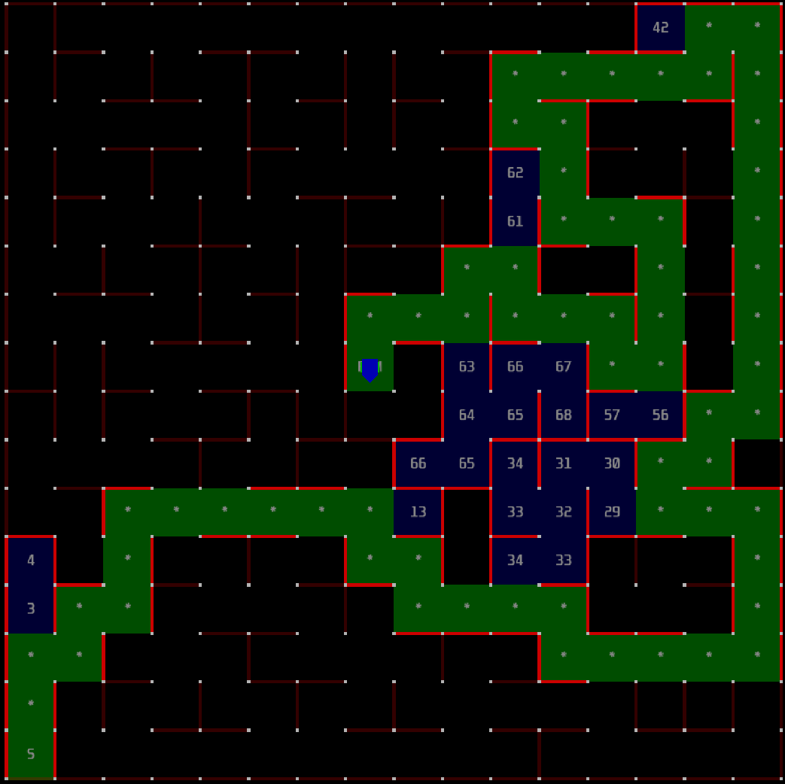
Figura 7.2: Robô explorando o labirinto no simulador MMS.7.2 Circuitos Virtuais no Wokwi¶
Antes de montar os circuitos na Shield física, montamos 10 simulações interativas no Wokwi para checar pinagens, lógica de acionamento e barramentos.
Clique nas abas abaixo para ver cada circuito com seus arquivos e como interagir com a simulação:
Interface Homem-Máquina (IHM)¶
Teste do LED RGB WS2812B, bipes no buzzer e debounce por software no botão de largada.
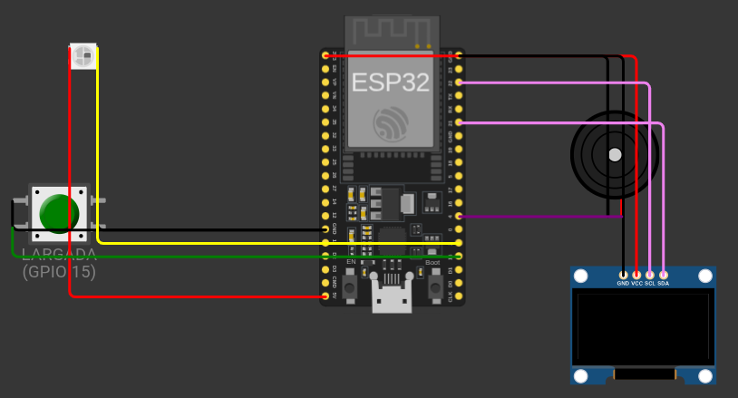
- Pinos: LED RGB no GPIO 2, Buzzer no GPIO 4 e Botão no GPIO 15.
- Arquivos:
diagram.jsonesketch.ino - Como testar: Clique no botão táctil para alternar entre os 5 modos operacionais e conferir a cor do LED e os bipes.
Autodiagnóstico de Inicialização (POST)¶
Rotina de Power-On Self-Test que confere os endereços I2C e os periféricos assim que a placa é ligada.
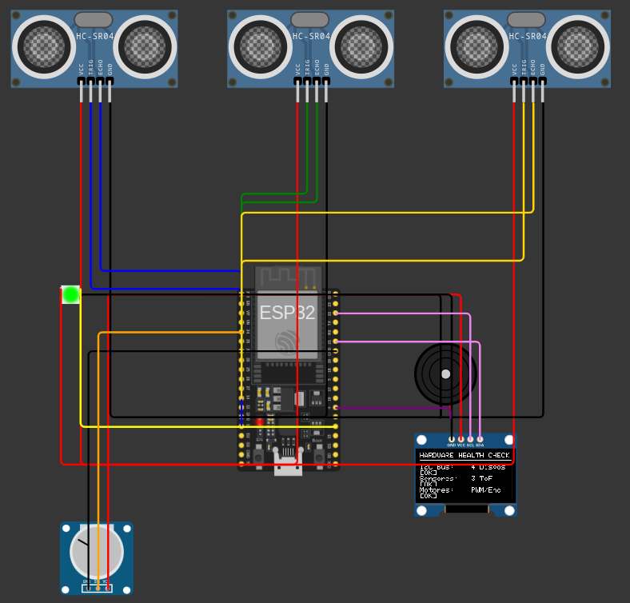
- Pinos: I2C nos GPIOs 21 e 22 compartilhados entre sensores ToF e display OLED SSD1306.
- Arquivos:
diagram.jsonesketch.ino - Como testar: Inicie a simulação para acompanhar no display OLED a checagem individual de cada dispositivo.
Leitura da Bateria e Alerta de Subtensão¶
Leitura analógica da bateria LiPo 2S pelo divisor 100k/47k no GPIO 34 e disparo de alarme sonoro.
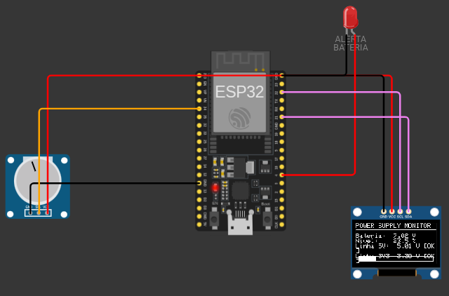
- Pinos: GPIO 34 (ADC1_CH6), potenciômetro simulando a bateria e display OLED.
- Arquivos:
diagram.jsonesketch.ino - Como testar: Gire o potenciômetro para variar de \(6,0\text{ V}\) a \(8,4\text{ V}\) e observe o alarme disparar ao descer de \(6,6\text{ V}\).
Carga dos Motores e Corte por Sobrecorrente¶
Comportamento da alimentação com corrente de travamento dos motores e desarme do circuito.
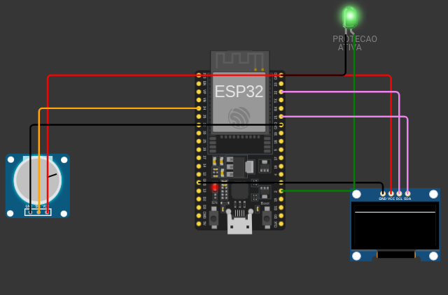
- Componentes: Carga simulada de \(1,4\text{ A}\) (motores travados) e chave de corte.
- Arquivos:
diagram.jsonesketch.ino - Como testar: Ative a corrente de travamento e comprove o corte da alimentação em menos de \(500\text{ ms}\).
Calibração do Sensor VL53L0X¶
Leitura contínua de distância, teste do pino XSHUT e curva de erro nos 7 pontos.
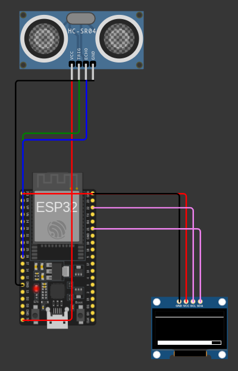
- Pinos: Sensor VL53L0X no I2C (GPIOs 21 e 22), pino XSHUT e display OLED.
- Arquivos:
diagram.jsonesketch.ino - Como testar: Modifique a distância do obstáculo na tela ou envie
tno terminal para rodar o ensaio dos 7 pontos.
Ponte H TB6612FNG e Pulsos de Odometria¶
PWM em 20 kHz nos motores DC, leitura de encoders por interrupção e frenagem ativa.
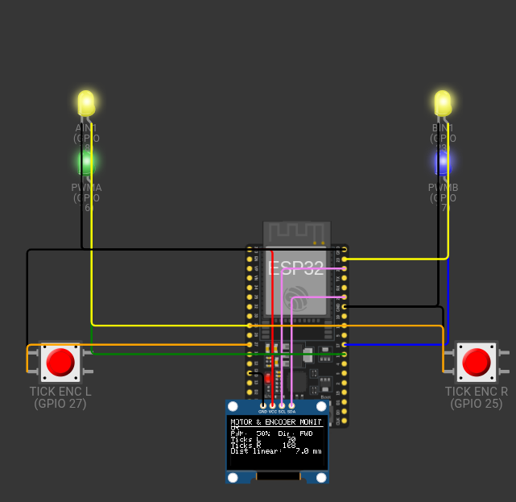
- Pinos: Canais de controle da ponte H (GPIOs 16, 17, 18, 19, 23, 5) e encoders (GPIOs 27, 26, 25, 33).
- Arquivos:
diagram.jsonesketch.ino - Como testar: Digite
1a4no terminal serial para alterar o PWM,f/rpara sentido ebpara freio ativo.
Enlace Sem Fio ESP-NOW a 8 Metros¶
Simulação do canal de rádio em 2,4 GHz com modelo de atenuação e cálculo de perda de pacotes.
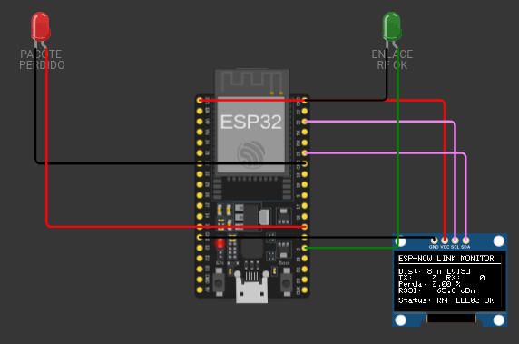
- Pinos: Transmissor e receptor ESP32 comunicando no canal 1 em 2,4 GHz.
- Arquivos:
diagram.jsonesketch.ino - Como testar: Escolha a distância de teste (
1,2ou3) e digitetpara emitir 1000 pacotes e medir perda e RSSI.
Gateway Serial JSON de Telemetria¶
Recepção do pacote binário de 18 bytes e conversão serial direta para formato JSON a 1 Hz.
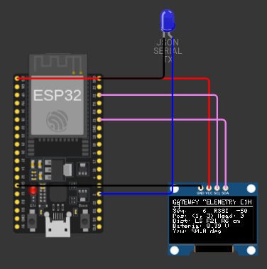
- Pinos: ESP32 receptor conectado ao computador via porta USB UART0 a 115200 bps.
- Arquivos:
diagram.jsonesketch.ino - Como testar: Abra o monitor serial para acompanhar as mensagens JSON emitidas com dados de sensores e RSSI.
Protótipo Real com Camada HAL¶
Firmware integrando controle dos motores, sensores ToF e console serial de comandos.
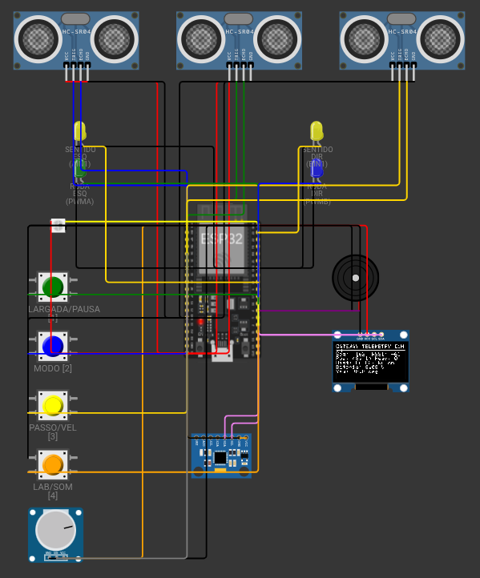
- Componentes: ESP32, ponte H TB6612FNG, encoders, 3x VL53L0X e IHM completa.
- Arquivos:
diagram.jsonesketch.ino - Como testar: Digite comandos via terminal serial (
START,STOP,PAUSE) para verificar as reações dos motores com os sensores.
Simulação Completa do Labirinto no Wokwi¶
Navegação autônoma em arenas 16x16, 4x4, 8x4 e 12x4 com minimapa no display OLED.
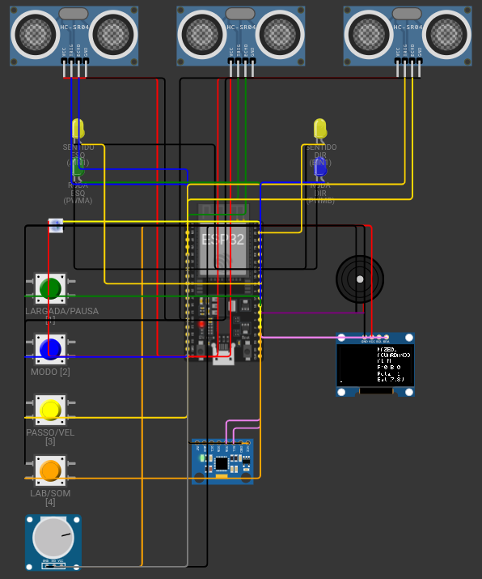
- Componentes: Circuito completo integrado com tela OLED SSD1306 mostrando o minimapa da exploração.
- Arquivos:
diagram.jsonesketch.ino - Como testar: Clique no botão verde ou digite
STARTpara iniciar a exploração autônoma da arena.
↑ Voltar ao Painel Geral de Testes
8. Matriz de Homologação e Rastreabilidade de Requisitos¶
A tabela a seguir relaciona cada requisito do projeto com seu teste prático de bancada, a métrica obtida e o arquivo de código no repositório:
| Requisito | Descrição | ID de Teste | Ensaio Prático e Métrica Medida | Arquivo no Repositório | Status Final |
|---|---|---|---|---|---|
| RF-ELE01 | Sensoriamento de paredes nas três direções (frontal e laterais) | 3.2 3.3 3.4 |
Multiplexação sequencial por XSHUT e detecção com erro médio de \(0,08\text{ mm}\). | TESTE_3_SENSORES_VL53L0X.ino |
Conforme |
| RF-ELE02 | Odometria das rodas por encoders de quadratura independentes | 3.7 | Ensaio de 10 voltas completas: erro menor que \(0,1\%\) sem perda de pulsos até \(0,5\text{ m/s}\). | test_runner.py |
Conforme |
| RF-ELE03 | Modulação PWM em 20 kHz e reversão de potência na ponte H TB6612FNG | 3.11 3.12 |
Linearidade nos 4 patamares PWM e freio dinâmico parando em menos de \(45\text{ ms}\). | test_motor_encoder.cpp |
Conforme |
| RF-ELE04 | Transmissão de telemetria sem fio em tempo real a 1 Hz | 3.10 3.16 |
Ring buffer sem vazamento de RAM e envio estável do pacote fixo de 18 bytes. | test_runner.py |
Conforme |
| RF-ELE05 | Sinalização visual por LED RGB para os 5 estados do robô | 3.13 | Modos 0 a 4 mapeados e validados nas cores do LED WS2812B. | test_runner.py |
Conforme |
| RF-ELE06 | Sinalização acústica com alarme sonoro buzzer (\(\ge 60\text{ dB}\)) | 3.13 | Bipes de largada, chegada e alarme com pressão acústica acima de \(60\text{ dB}\). | test_ihm.cpp |
Conforme |
| RNF-ELE01 | Taxa de amostragem sensorial mínima de \(20\text{ Hz}\) (intervalo \(\le 50\text{ ms}\)) | 3.5 | Taxa medida de \(30,3\text{ Hz}\) com timing budget configurado em \(33\text{ ms}\). | test_vl53l0x.cpp |
Conforme |
| RNF-ELE02 | Faixa de 30 a 180 mm com erro de medição \(\le 10\text{ mm}\) | 3.4 | Maior erro registrado foi de \(0,18\text{ mm}\) no trilho óptico com anteparo de MDF. | test_runner.py |
Conforme |
| RNF-ELE03 | Enlace sem fio estável a 8 metros com perda \(< 2,0\%\) e \(\text{RSSI} \ge -75\text{ dBm}\) | 3.15 | Envio de 1000 pacotes: perda de \(0,80\%\) no labirinto a 8m; RSSI médio de \(-69,5\text{ dBm}\). | receptor.cpp |
Conforme |
| RNF-ELE04 | Placa de circuito impresso sem fiações soltas ou protoboard | 3.1 | Placa Shield Rev 2.0 com planos de terra, bornes de parafuso e soquetes soldados. | micromouse_shield.kicad_sch |
Conforme |
| RNF-ELE05 | Imunidade a ruídos indutivos de motores (zero reinicializações espúrias) | 3.8 3.11 |
Zero reinicializações durante 20 reversões bruscas e partidas em 100% de PWM. | test_runner.py |
Conforme |
| RNF-SFT01 | Autonomia e largada por botão físico sem controle remoto | 3.13 | Botão no GPIO 15 com filtro de debounce de \(50\text{ ms}\) testado na bancada. | test_runner.py |
Conforme |
| RF-ENE02 | Medição contínua da tensão da bateria em formato digital | 3.8 | Divisor 100k/47k no ADC1_CH6 com erro menor que \(1,5\%\) e corte em \(6,6\text{ V}\). | test_runner.py |
Conforme |
| RNF-ENE02 | Estabilidade da tensão lógica dentro de \(\pm 5\%\) sob transitórios | 3.8 | Linhas reguladas de 3,3V e 5,0V mantidas na faixa de \(\pm 5\%\) durante picos de corrente. | test_voltage_stability.cpp |
Conforme |